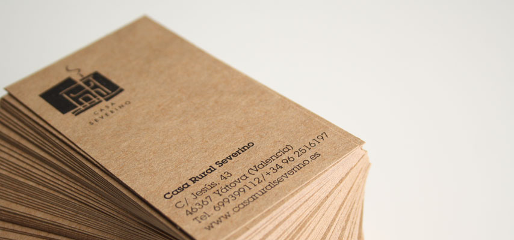

habitaciones
zonas comunes
servicios
el pueblo
fiestas
gastronomía
agricultura
situación
enlaces
tarifas
la casa
yátova
a visitar
actividades
galería
contacto

Casa Rural Severino.
C/ Jesús, n° 43
46367 Yátova, (Valencia)
Telf. 699399112 / (+34)962516197
©2010 Casa Rural Severino
| C/ Jesús, n° 43 | 46367 Yátova(Valencia) | Telf. 699399112 / (+34)962516197 |
realizada por m-inspira